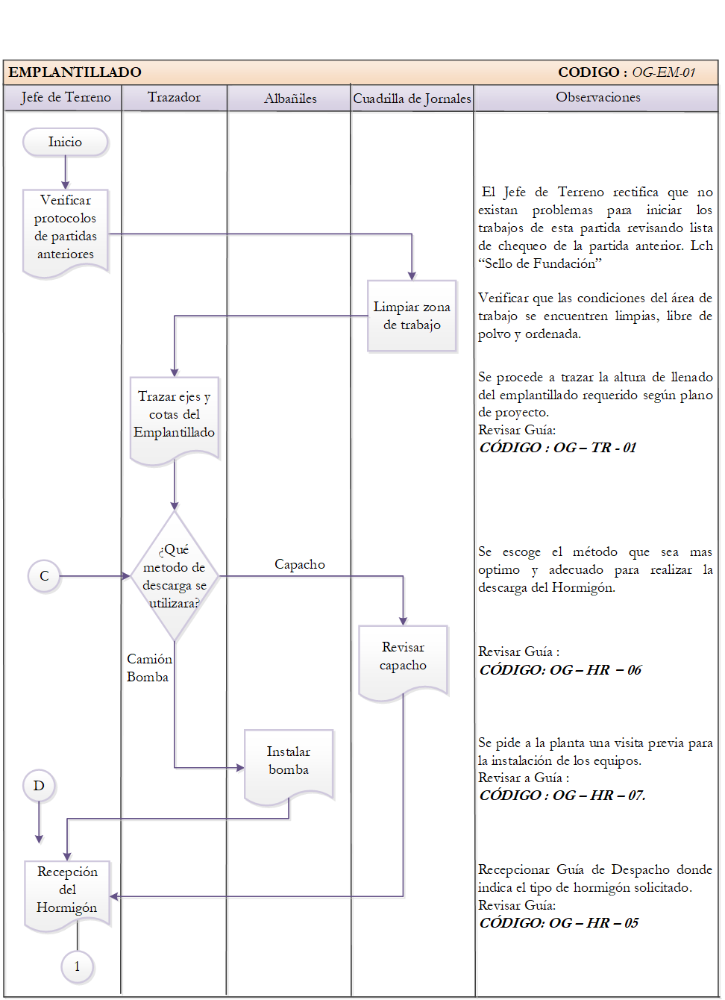
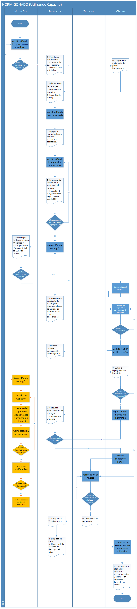
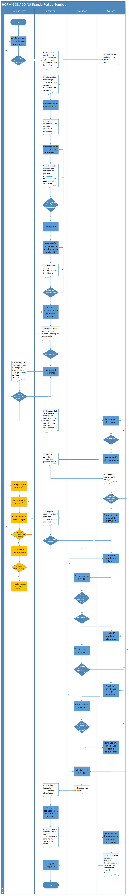

Fundaciones
Contents
13. Fundaciones#
Los cimientos del edificio son componentes que están destinados a transferir los esfuerzos del edificio al suelo (Solminiac & Thenoux, 1998).
13.1. Tipos de Fundaciones#
Las fundaciones se clasifican en 6 grupos fundaciones superficiales, profundas, indirectas, hidráulicas, por consolidación y en subfundaciones (ONDAC, 2018).
13.1.1. Fundaciones superficiales#
Este tipo de fundación son aquellas que transfieren por compresión las cargas al suelo de apoyo (Solminiac & Thenoux, 1998).
Fundación aislada:
Es una solución económica que recibe la carga de una columna o pilar y lo traslada a la tierra a través un pequeño ensanchamiento.
{kind=link}
Fundación corrida:
Se provee una zapata continua a lo largo de la base del muro para recibir la hilera de columnas cuando la carga es transmitida por un muro o una hilera de columnas (Stozitzky & Prieto,1989).
{kind=link}
Losa de fundación:
Una losa de cimentación es una placa de hormigón que se apoya en el suelo y distribuye el peso y las cargas del edificio por toda la superficie de apoyo (ONDAC,2016).
{kind=link}
Construccion en seco = Losa de cimentación: Ventajas y desventajas
13.1.2. Fundación profunda#
Se debe excavar para encontrar una capa adecuada a las necesidades de la obra cuando los estratos superficiales son demasiado débiles y se deforman fácilmente por las cargas, lo que puede provocar giros en las losas o en las zapatas (Stozitzky & Prieto,1989).
{kind=link}
13.1.3. Fundación indirecta o por pilotes#
El pilote recibe la carga y la transmite al suelo de dos formas, de punta, como si fuese una columna apoyada sobre un plano resistente, y por rozamiento lateral con el suelo, se distinguen los siguientes: Pilotes de madera, Pilotes de hormigón (Pilotes fundidos in situ, Pilotes prefabricados), Pilotes de acero (ONDAC,2018).
{kind=link}
13.1.4. Fundaciones hidráulicas#
En terrenos inundados, solo hay dos opciones, sacar el agua o trabajar con ella. En el primer caso se utilizan bombas; si su capacidad es suficiente para extraer el agua, se tiene fundación con agotamiento hidráulico, por otra parte, si las bombas no pueden producir el agotamiento total , se tiene la fundación por depresión del nivel freático y finalmente cuando no es posible ni el agotamiento ni la depresión, se tiene entonces una fundación hidráulica sin agotamiento (ONDAC, 2016).
{kind=link}
13.1.5. Fundación por consolidación#
La idea básica detrás de este tipo de fundación es mejorar por las condiciones del suelo por medios artificiales para asentar sobre el algunas fundaciones, se trata de aumentar la capacidad de soporte mediante la compactación mecánica o su endurecimiento por medios químicos, son tres los tipos de compactación, Congelamiento, compactación (vibrando la masa, introduciendo pilotes) y por último mediante inyecciones petrificantes (ONDAC, 2018).
{kind=link}
13.1.6. Subfunción#
La construcción de sótanos en edificios existentes es un proceso delicado, costoso y lento que, en ocasiones, se lleva a cabo en condiciones extremadamente difíciles. Se complica aún más por la necesidad de salvaguardar la estructura que se soterrará durante el período de construcción y de velar por la seguridad del personal y de otras personas. Los trabajos se realizarán en las siguientes etapas: demolición de la antigua estructura, descascarillado o excavación al nivel deseado. nueva construcción de cimientos, apuntalamiento y remoción de andamios temporales (ONDAC, 2018).
13.2. Proceso constructivo#
{kind=link}
Entre ellos destacan:
Excavacion- Sello de fundacion
Mejoramiento de suelo
Emplantillado
Enfierradura
Moldaje
Hormigones
13.2.1. Excavacion- Sello de fundación#
{kind=link}
Sello de fundacion
{kind=link}
13.2.2. Diagrama de Flujo – “Sello de Fundación”#
(Vega,2018)
13.2.3. Diagrama de Flujo – “Certificación de Sello”#
(Vega,2018)
13.2.4. Diagrama de Flujo – “Material de Relleno”#
(Vega,2018)
13.2.5. Mejoramiento de suelo#
13.2.6. Emplantillado#
13.2.7. Diagrama de Flujo – “Trazado del Emplantillado”#
(Vega,2018)
13.2.8. Diagrama de Flujo – “Emplantillado”#
(Vega,2018)
13.2.9. Armadura#
Enfierradura-Armadura en Zapata aislada
13.2.10. Diagrama de Flujo Armadura#
(Osses,2015)
13.2.11. Moldaje.#
13.2.12. Diagrama de Flujo Moldaje#
(Osses,2015)
13.2.13. Hormigones#
{kind=link}
Curado de hormigón en radier
13.2.14. Diagrama de Flujo – “Trabajo Previo del Hormigón”#
(Vega,2018)
13.2.15. Diagrama de Flujo Hormigonado Capacho#
(Osses,2015)
13.2.16. Diagrama de Flujo Hormigonado Bombeo#
(Osses,2015)
13.2.17. Diagrama de Flujo Radier#
(Osses,2015)
from IPython.display import YouTubeVideo
YouTubeVideo("gmO4nj6GxY8")
{kind=link}
13.3. Lista de Verificación Radier#
(Almonacid,2020)
13.4. Protocolo de Recepción de Radier#
(Almonacid,2020)